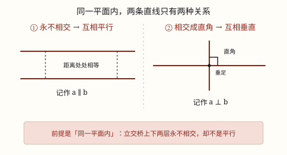

平行与垂直
同一平面内，两条直线要么相交、要么不相交。不相交叫互相平行，相交成直角叫互相垂直，垂线段最短。
| 所属主题 | 图形的认识与测量 |
|---|---|
| 所属模块 | 图形与几何 |
| 课标学段 | 第二学段（3~4年级） |
| 前置知识 | 线段、射线和直线 |
| 核心素养 | 几何直观空间观念推理意识 |
教材定位
人民教育出版社《2024年版》
对应四上第 5 单元「平行四边形和梯形」：平行与垂直、画垂线与平行线。
课标要求
| 图形与几何·图形的认识与测量 | 结合实例认识线段、射线和直线；体会两点间所有连线中线段最短，知道两点间距离；会用直尺和圆规作一条线段等于已知线段（例26）；了解同一平面内两条直线的位置关系。 印刷第 29 页 行为动词：理解 |
|---|---|
| 图形与几何·图形的认识与测量 | 在图形认识与测量的过程中，增强空间观念和量感。 印刷第 30 页 行为动词：感悟 |
说明
在同一张纸面上、同一块黑板面上（这叫同一平面内），两条直线的位置关系只有两种：要么相交，要么不相交，没有第三种。
永不相交的两条直线，叫互相平行，记作 a \parallel b，读作「a 平行于 b」。平行线不管往两边延长多远都不会碰到。
相交成直角的两条直线，叫互相垂直，记作 a \perp b。它们的交点叫垂足。
垂直是相交里最特殊的一种。两条直线相交围出四个角，只要其中一个是直角，其余三个也都是直角，所以看见一个直角标记，就等于看见四个。
从直线外一点向这条直线画线段，可以画很多条，垂直线段最短。这条垂直线段的长度，就叫这个点到这条直线的距离。
画的时候都靠三角尺：画垂线是「一贴、二移、三画」——一条直角边贴住已知直线，移到指定点，沿另一条直角边画；画平行线则让三角尺贴住已知直线，用直尺顶住另一条边平移过去再画。
使用场景
教室的墙和地面：两面墙相交的那道缝是竖线，地面上的砖缝是横线，它们相交成直角，这就是垂直。
斑马线、铁轨、双杠：同一平面内两条永远等距、怎么延长都不相交的线，都是平行。
立交桥：上层和下层两条路方向一样、也永远不会碰到，可它们一高一低不在同一平面，这不是平行。
量跳远成绩：从落地点向起跳线作垂线，垂线段多长成绩就是多少，斜着量会把成绩量多。
装门窗、立柜子：木工用直角尺卡一卡，靠的就是「垂直」这两个字，柜子才不会歪。
注意点
「同一平面内」这句话不能省。天花板的一条边和地面的一条边也永不相交，可它们不在同一平面，不叫平行。
平行说的是直线，不是线段。两条线段在纸上没碰上，不代表它们平行——把线段延长再看。
垂直不是「竖着」。斜着相交成直角也叫垂直；反过来，一横一竖但夹角只有 80°，不是垂直。
垂足是交点，不是中点。垂足可能落在线段中间，也可能落在延长线上，位置由垂直决定，跟长短没关系。
画垂线时三角尺要贴实。直角边没完全贴住已知直线，画出来的线看着直，其实不垂直。
量距离一定走垂直方向。点到直线的距离取垂线段，斜着量的都比它长。
为什么是这样

图 1：平行看「距离变不变」，垂直看「直角尺合不合缝」
算理推导
两条直线都是无限长的。你把它们一直延长下去，只有两种结局：在某一处碰上（相交），或者永远碰不上（不相交）。所以「相交」和「不相交」就把所有情况分完了，不会再冒出第三种。
那为什么不干脆说「永不相交就叫平行」，非要加「同一平面内」？看教室：天花板前边那道棱和地面上一条横棱，方向一样，你怎么延长它们也碰不上——可它们一高一低，根本不在同一个面上。要按「永不相交」算平行，它就该算，可它连「两条线之间处处一样宽」都谈不上。立交桥上下两层路面也是这样：看着平行，其实一个在上一个在下。所以讨论之前，必须先把范围限定在同一张「纸」上。
在同一平面内，两条平行线之间的距离处处相等。拿尺子在不同位置横着量几次，量出来的数一样——这正是「永不相交」你能亲手测到的样子：距离不变，就永远追不上。
再看垂直。两条直线相交围出四个角，它们正好拼成一整圈（四上第 2 单元量过，一整圈是 360°）；而相邻的两个角拼起来是一条直线，也就是 180°。所以只要有一个角是 90°，它旁边那个角就是 180° - 90° = 90°，四个角依次都是直角。一个直角定住四个角，这就是垂直的特殊之处。
最后看垂线段为什么最短。从线外一点向直线画几条线段，只有一条是垂直的，其余都是斜的。斜着走相当于「先横着挪一段，再竖着走一段」，绕了路；垂线是直着过去的，所以最短。把这条最短的线段量出来，就是点到直线的距离。
正因为垂线段最短，量跳远成绩、量身高、量河的宽度，都要「作垂线」——斜着量出来的是绕路长度，不是真正的距离。
动手实验
在一张纸上画一条直线，在它上方点一个点 A。拿三角尺，从 A 向这条直线画五条长短不同的线段，中间那一条用直角边贴着画，保证垂直。用尺子一条条量长度，记在本子上：垂直那条总是最短。再把 A 挪到别处重画一遍，结论一样。第二个实验：用两根吸管和图钉在硬纸板上做一个「活动十字」，转动其中一根，观察四个角——一根动，四个角一起变；当其中一个变成直角时，另外三个也正好是直角，把三角尺的直角卡上去，四个角个个合缝。
按场景的例题
例 1（场景：工程建造） 立交桥的上下两层路面
城市立交桥的上层路面和下层路面方向相同，永远不会相交。它们是互相平行吗？
解：不是。平行的前提是「同一平面内」。上下两层路面一高一低，不在同一个平面上，虽然方向一致、永不相交，也不能叫互相平行。同一平面内永不相交的两条直线，才叫互相平行。
答：不是平行，因为它们不在同一平面内。
例 2（场景：校园生活） 黑板上的平行与垂直
教室的黑板是一个长方形。它的上边和下边、左边和右边分别是什么关系？相邻两条边呢？
解：上边和下边在同一平面内永不相交，互相平行；左边和右边也互相平行。相邻两条边相交成直角，互相垂直，交点正好是黑板的四个角。
答：对边互相平行，邻边互相垂直。
例 3（场景：计量与估算） 量跳远成绩
跳远时沙坑边有一条起跳线。体育老师为什么从落点向起跳线作垂线来量，而不是斜着量到起跳线的一端？
解：从落点到起跳线可以画很多条线段，其中垂线段最短。斜着量到端点，走的是「绕路」的长度，一定比垂线段长，会把成绩量多。所以成绩取垂线段的长度，也就是落点到起跳线的距离。
答：因为垂线段最短，斜着量会把成绩量多。
例 4（场景：行程出行） 高铁钢轨的轨距
高铁的两条钢轨要保证列车平稳，全程轨距都是 1435 毫米。这和「平行」有什么关系？
解：两条钢轨铺在同一个路基平面内，全程不相交，也就是互相平行。而平行线之间的距离处处相等，所以只要铺的时候保持平行，任何一处量出来的轨距都是 1435 毫米。要是有地方不平行，那一处就会变宽或变窄，列车通过时就会晃。
答：因为平行线间距离处处相等，铺成平行轨距才不会变。
常用推论
同一平面内，两条直线的位置关系只有相交和不相交两种：不相交叫平行，相交成直角叫垂直。
平行线之间的距离处处相等；两条平行线之间画出的所有垂直线段都一样长。
在同一平面内，垂直于同一条直线的两条直线互相平行。比如两面墙的砖缝都垂直于墙脚线，它们就互相平行。
从直线外一点到这条直线所画的线段中，垂直线段最短，它的长度就是这点到直线的距离。
长方形、正方形的对边互相平行，邻边互相垂直，四个角都是直角。
易错点
错立交桥上下两层的两条路「永不相交」，就说它们互相平行。
为什么错漏掉了「同一平面内」这个前提。平行讲的是同一张平面上的两条直线，上下两层不在同一平面，虽然方向一致也碰不上，但不叫平行。
正确先把范围说清：同一平面内永不相交的两条直线才互相平行。立交桥上下两层只能说「方向相同」。
错在纸上画两条没碰上的线段，就说它们互相平行。
为什么错线段有端点，没碰上可能只是还没延长到那个位置。平行说的是它们所在的直线。
正确把两条线段各自延长成直线再看：仍然不相交才叫平行；延长后相交成直角，就是垂直。
错看见一横一竖两条线，就说它们互相垂直。
为什么错横和竖只是摆放方向，垂直看的是夹角是不是 90°。斜着相交成直角也是垂直，一横一竖夹角是 80° 反而不是。
正确用三角尺的直角去卡交点，能严丝合缝才是垂直。
错量落点到起跳线的距离时，斜着量到起跳线的一端，还说「量的是直线，最短」。
为什么错从一点到一条直线能画无数条线段，只有垂线段最短。斜线走的是斜边，一定比垂线段长。
正确从落点向起跳线作垂线，量这条垂线段的长度。
直观理解
把两条直线想成两列同时出发、速度一模一样的火车，各走一条笔直的轨道。只要方向完全一致、又都在同一块地面上，它们之间的距离就永远不变，谁也追不上谁——这就是平行。距离不变，是「永不相交」你能亲眼看见的样子。垂直呢，像十字路口的斑马线和马路中线正好摆成直角：一个角方方正正，其余三个角也跟着方正，直角三角尺一卡就合缝。所以判断平行看「距离变不变」，判断垂直看「直角尺合不合缝」，都不用死背。
同一平面两条线，相交不相交两分法；永不相交叫平行，交成直角叫垂直；点到直线作垂线，垂线段最短记心里。